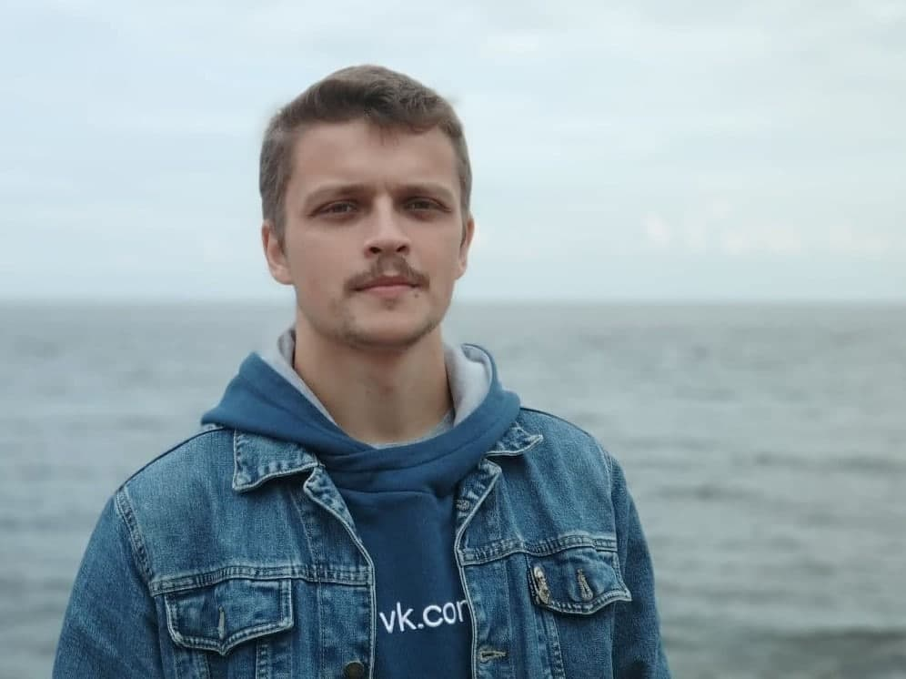

Ilya Muratov
Software Engineer
... who really enjoys programming in Ruby

GitHub: github.com/ilyamur
Location: Russia, Saint Petersburg


My strengths:
- The ability to learn quickly and independently
- Excellent self-management skills
- The ability to find a common ground
- Strong communication skills
Technical Skills
Ruby and Ruby on Rails
- Understanding of the OOP principles, Rails design patterns, REST and MVC.
- Ability to write sleek and readable code. Respecting the Ruby-way and the DRY principle
- Using Rubocop and Byebug/binding.irb for the best quality of my software
- Actively using testing practices (RSpec, Minitest) and the version control (Git + GitHub)
Frontend
- Using HTML, CSS, Bootstrap for creating an adaptive layout
Databases
- Experience and knowledges in the database management: SQLite3, PostgreSQL
- Configuring Redis (with Resque) for an e-mail sending in delayed jobs
DevOps
- Experience in deploying on Heroku and the DigitalOcean VPS
- Actively using Capistrano for an automated deployment
- Configuring Nginx + Phusion Passenger
Other competencies and skills
- Rich experience in using *nix systems (MacOS, GNU/Linux) and the command line (zsh, bash)
- Solid understanding of the fundamentals of network connectivity and HTTP principles
- Experience in working with different data formats (XML, JSON, CSV)
My Projects
Ruby
-
Hangman (github) - the CLI implementation of the famous puzzle game. Made with
basic OOP patterns and interface animations.
[File Managment, Colorized]
-
Notepad (github)
- the notepad app with different types of notes. Written with the
database and OOP patterns in mind.
[SQLite3, Optparse]
-
SunnyDay (github) - the console weather forecast. I used the geolocation service
and the external API to make this app really useful.
[External API, JSON, Geocode]
Ruby on Rails
-
Warm Meetings (github
| web) - the meeting
service with a rich social functionality. Users can subscribe, add
photos, create private events and post comments. Application
deployed on the DigitalOcean VPS. Delayed jobs are perfoming by
Resque. I used Bootstrap and JQuery for the best user experience.
[AWS S3, VPS, Resque, OAuth2, Devise, Pundit, Bootstrap, JQuery]
-
Brief Chat (github
| web) - the
chat app with the basic room support. I used WebSockets to provide
persistent real-time communication.
[Redis, Action Cable, WebSockets]
-
Good Questions (github
| web) - the
ask.fm analogue. The application supports anti-spam protections,
hashtags, anonymous questions and many other social functions.
[reCAPTCHA, JQuery]
Education
Admiral Makarov Maritime Academy
[2006 — 2012]
Operation and Maintenance Engineer of Nuclear Power Plants
Languages
Russian: native
English: B1+. Ready for an interview